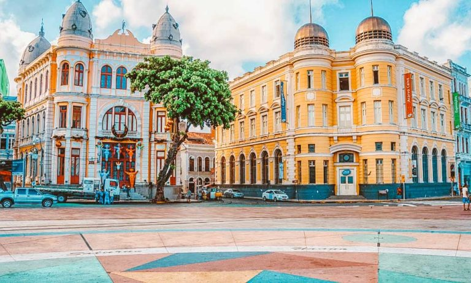
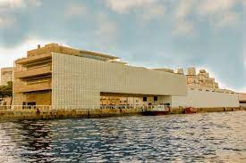

A Praça do Marco Zero é um dos principais pontos turísticos do Recife Antigo. Ela marca o início das coordenadas geográficas da cidade e é um local icônico para eventos culturais e festivos.
O Cais do Sertão é um museu interativo dedicado à cultura e história do sertão nordestino. Ele apresenta exposições permanentes e temporárias, além de oferecer uma experiência imersiva aos visitantes.
